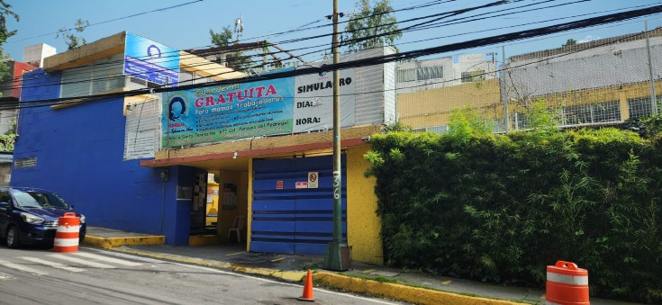

En CENDI Pedregal ofrecemos servicios de cuidado, atención y desarrollo integral para niños pequeños, desde bebés de 43 dias de nacidos hasta los 4 años de edad, mientras sus padres trabajan o realizan otras actividades. Nos enfocamos en cubrir las necesidades básicas de los niños, como alimentación, higiene y sueño, así como en promover su desarrollo físico, cognitivo, social y emocional.
Las guarderías proporcionan un entorno seguro y supervisado donde los niños pueden ser cuidados mientras sus padres no pueden hacerlo.
Buscan fomentar el desarrollo de los niños en todas las áreas, a través de actividades pedagógicas, recreativas y de estimulación temprana.
Las guarderías también juegan un papel importante al brindar apoyo a los padres, permitiéndoles trabajar o estudiar con la tranquilidad de que sus hijos están bien atendidos.
Cuentan con personal especializado, como educadoras infantiles o cuidadoras, que tienen experiencia y conocimientos en el cuidado y desarrollo de niños pequeños.
Ofrecen espacios diseñados para las necesidades de los niños, con áreas de juego, descanso y alimentación.
En CENDI Pedregal, favorecemos el desarrollo integral de los niños desde sus primeros años con cercanía, calidez y afecto. Nuestro objetivo es validar sus emociones, fomentar su comunicación, destacar sus ideas y reconocer su potencial.
Estamos convencidos de que, al aportar una cultura para la Paz, promovemos los valores universales que benefician a la sociedad.
Nuestro Modelo Educativo CENDI Pedregal (MODCENDIP) está sustentado en la más alta investigación académica y científica y cuenta con programas vanguardistas que garantizan el aprendizaje de los niños.
Enfoque pedagógico donde los estudiantes se involucran activamente en su proceso de aprendizaje, en lugar de ser receptores pasivos de información. Se caracteriza por la participación, la interacción y la construcción del conocimiento a través de diversas estrategias y actividades.
Son educadoras con vasta experiencia y habilidades pedagógicas superiores, capaces de adaptarse a diversas situaciones de aprendizaje y de fomentar un desarrollo integral en sus estudiantes. Poseen un profundo conocimiento de su materia y de las estrategias de enseñanza, lo que les permite guiarlos hacia el éxito académico y personal.
Capacidad de un líder para reconocer, comprender y gestionar tanto sus propias emociones como las de su equipo, con el objetivo de construir relaciones más fuertes, motivar a los demás y lograr mejores resultados. Este tipo de liderazgo se centra en las personas y en cómo sus emociones impactan en el entorno laboral.
Metodología educativa donde los estudiantes trabajan juntos en grupos para alcanzar metas comunes, compartiendo conocimientos y apoyándose mutuamente en el proceso de aprendizaje. Se enfoca en la interacción y la cooperación entre los estudiantes, promoviendo habilidades sociales y cognitivas.
De 45 días de nacido a 6 meses de edad
Estimulación temprana y el desarrollo integral de los bebés, abarcando áreas como la motricidad, el lenguaje, la cognición y la socialización
Se realizan actividades que promueven el movimiento, la exploración sensorial, el reconocimiento de objetos y personas, y el desarrollo de habilidades motoras finas y gruesas.
De 7 meses a 12 meses de edad
Se realizan actividades que estimulan su desarrollo psicomotriz, sensorial, cognitivo y socio-afectivo. Estas actividades incluyen juegos con diferentes texturas, exploración de objetos, canciones, lectura, y estimulación del lenguaje y la autonomía.
De 13 meses a 18 meses de edad
se realizan actividades que estimulan el desarrollo integral de los niños de 13 a 18 meses, enfocándose en áreas cognitiva, de lenguaje, autonomía, motricidad gruesa y fina, social, afectiva y de hábitos. Estas actividades incluyen juegos que fomentan la curiosidad, el aprendizaje y la exploración, manteniendo un ambiente seguro y afectuoso.
Niños de 18 meses a 2 años de edad
Las actividades se centran en el desarrollo integral de niños de 19 a 24 meses, abarcando áreas psicosocial, de lenguaje, psicomotriz y cognitiva, incluyen juegos que fomentan la imitación, la exploración, la interacción con objetos, el reconocimiento de personas y objetos, así como el desarrollo de habilidades motoras como caminar, encajar piezas y manipular objetos pequeños. También se estimula la comunicación a través de canciones, cuentos sencillos y la exploración de diferentes texturas y sonidos
Niños de 2 años a 2 años 6meses de edad
Las actividades se enfocan en el desarrollo psicomotriz, la exploración sensorial y la comunicación, además de promover hábitos saludables y el bienestar emocional de los niños
Niños de 2 años 6 meses a 3 años de edad
Las actividades se enfocan en el desarrollo psicomotriz, el lenguaje y la exploración del mundo a través del juego y la interacción social. Los niños participan en actividades como seguir patrones, imitar trazos, manipular objetos, patear pelotas, subir escaleras y explorar su entorno. También se estimula su lenguaje a través de canciones, cuentos y juegos, así como actividades artísticas como colorear y decorar figuras con diferentes materiales.
Niños de 3 a 3 años 6 meses de edad
Se enfocan en el desarrollo integral de los niños, abarcando áreas psicosocial, psicomotriz, y de lenguaje. Se promueve la exploración, la expresión de sentimientos, la participación en juegos, y el aprendizaje de hábitos como comer solos y el inicio del juego de imitación del mundo adulto.
Niños de 3 años 6 meses a 4 años de edad
Las actividades se centran en el desarrollo psicomotriz, lenguaje, expresión, actividades artísticas, pensamiento y exploración del mundo. Se promueve la exploración del entorno, el juego libre y actividades que fomenten la autonomía y socialización.